기상기사 (2010-03-07 기출문제)
1과목: 기상관측법
1. 구름의 관측 시 그 이동방향은 통상적으로 몇 방위를 사용하는가?
- 4
- 8
- 16
- 32
(정답률: 50%)

2. 지상 기상 관측에 있어 관측시간 정각에 행하여야하는 것은?
- 우량계
- 자기 습도계
- 건구 온도계
- 수은 기압계
(정답률: 75%)
3. 고층 관측시 사용되는 라디오존데 부착용 기구(balloon)의 주입가스로 주로 사용되는 가스 종류는?
- 헬륨
- 질소
- 오존
- 이산화탄소
(정답률: 80%)
4. 적설에 대한 설명으로 가장 거리가 먼 것은?
- 적설의 단위는 cm이며 소수 1위까지 관측한다.
- 적설은 기간에는 상관없고 지면에 쌓여있는 눈의 전체 깊이를 말한다.
- 신적설은 특정기간동안 새로 쌓인 눈의 깊이를 말한다.
- 눈이 노장의 지면을 가득 덮었을 때 적설이 있는것으로 한다.
(정답률: 64%)
5. 복사이론에서 사용되는 langly 의 단위를 바르게 표시한 것은?
- 1 g·cal/cm
- 1 g·cal/cm2
- 1 g·cal/cm3
- 1 g·cal
(정답률: 70%)
6. 햇무리나 달무리를 빈번히 동반하는 구름은?
- 권운(털구름)
- 권층운(털층구름)
- 고적운(높쌘구름)
- 층적운(층쌘구름)
(정답률: 73%)
7. 열대성 폭풍(Tropical Storm)의 중심 최대풍속에 해당되는 것은? (단, 강한 열대성 폭풍(STS)은 범위에 포함되지 않음)
- 17 m/s
- 17~24 m/s
- 25~32 m/s
- 33 m/s
(정답률: 60%)
8. 대부분의 기상위성 센서(복사계 : radiometer)에서 측정되는 복사량은?
- 복사휘도(또는 방사휘도 – radiance)
- 복사조도(또는 방사조도 – irradiance)
- 복사속(또는 방사속 – radiant flux)
- 흑체온도
(정답률: 50%)
9. 보통 사용하고 있는 우량계에서 깔대기 모양인 수수기 (受水器: 물을 받아 들이는 곳)의 안쪽 지름은?
- 10cm
- 20cm
- 30cm
- 40cm
(정답률: 84%)
10. 다음 중 안개비를 나타내는 기호는?
- ❜
- △
- ●
(정답률: 75%)
11. 다음의 레이더 영상 표출 방법 중 일정고도에서 의 위치와 강도 표출을 의미하는 것은?
- PPI
- RHI
- CAPPI
- Volume Scan
(정답률: 72%)
12. 낙뢰 관측장비에 대한 설명으로 옳지 않은 것은?
- 유효탐지 범위는 반경 약 300km이내이다.
- 발생위치, 낙뢰강도 및 극성에 대한 정보를 제공한다.
- 유효탐지거리 내에서는 대지방전의 90% 이상을 관측한다.
- 탐지위치의 정확도는 탐지법에 따라 500~8000m 수준이다.
(정답률: 50%)
13. 구름을 운편의 배열방법이나 투명의 정도에 따라 분류한 것은?
- 기본운형(genera)
- 종(species)
- 변종(varieties)
- 보충형(supplementary features)
(정답률: 64%)
14. 기준표준일사계(reference standard Pyrheliometer)인 것은 ?
- silver disk 일사계
- Michelson bimetallic 일사계
- new Eppley 일사계 (1958년 이후 것)
- old Eppley 일사계 (1958년 이전 것)
(정답률: 46%)
15. 우리나라에서 여름철 강한 강수의 측정에 가장 적합한 파장대는(band)는?
- K-Band
- S-Band
- X-Band
- C-Band
(정답률: 57%)
16. 백엽상에 설치하지 않아도 되는 측기는?
- 건구온도계
- 습구온도계
- 최저온도계
- 기압계
(정답률: 43%)
17. 전천이 완전히 짙은 안개로 차폐되어 하늘 상태를 판별할 수 없을 때, 이 때의 운량은?
- 1
- 9
- 0
- X
(정답률: 60%)
18. 해양기상관측부이에서 관측하는 요소가 아닌 것은?
- 기온
- 습도
- 강수량
- 수온
(정답률: 63%)
19. 라디오존데(Radiosonde)로 관측되지 않는 것은?
- 기압
- 기온
- 습도
- 바람
(정답률: 알수없음)
20. 대기전상이 아닌 것은?
- 뇌전(Thunderstorm)
- 번개(Lightning)
- 극광(Polar aurora)
- 비숍환(Bishop’s ring)
(정답률: 59%)
2과목: 대기열역학
21. 실용상 사용되는 비습의 단위는?
- g/kg
- kg/m3
- g/m3
- g3/m3
(정답률: 30%)
22. 다음 중 상당온위가 일정한 선은?
- 등온선
- 건조단열선
- 포화단열선
- 등포화혼합비선
(정답률: 22%)
23. 다음 중 가장 안정한 층은?
- 역전층
- 대류층
- 구름층
- 조건부불안정층
(정답률: 84%)
24. 대기중에서 공기덩이가 팽창에 의해서 한 일 ΔW는 다음 중 어떤 식으로 표시할 수 있는가? (단, T는 기온, r은 기압, α는 비체적, R은 기체상수, P는 기압, ρ는 공기 밀도이다.)
- ΔW=TΔα
- ΔW=PΔα
- ΔW=RΔα
- ΔW=ρΔα
(정답률: 58%)
25. Δq를 공기덩이에 가해진 열량, Δu 를 내부에너지의 변화량, Δ w를 공기덩이가 한 일이라 할 때, 열역학 제1법칙을 바르게 표현한 식은?
- Δq= Δu + Δw
- Δq= Δu - Δw
- Δq= -Δu + Δw
- Δq= -Δu - Δw
(정답률: 84%)
26. 등밀대기(균질대기)에서의 기온감율을 나타낸 것은? (단, 여기서 g는 중력상수, R은 공기 기체상수, H는 균질대기의 높이이다.)
- g/R
- R/g
- gH/R
- R/gH
(정답률: 36%)
27. 다음 중 열역학 선도(thermodynamic diagram)에 포함되어 있지 않은 선은?
- 등온선
- 건조 단열선
- 등압선
- 상대습도선
(정답률: 67%)
28. 혼합비에 대한 정의로 옳은 것은?
- 단위 질량의 건조 공기 당 수증기 질량
- 단위 질량의 공기 당 수증기 질량
- 단위 부피의 건조 공기 당 수증기 질량
- 단위 부피의 공기 당 수증기 질량
(정답률: 42%)
29. 다음 중 밑줄 친 이것은?
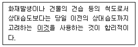
- 절대습도
- 실효습도
- 비습
- 혼합비
(정답률: 72%)
30. 다음 중 포화단열팽창 과정에서 보존되는 것은?
- 상대습도
- 수증기압
- 혼합비
- 온위
(정답률: 50%)
31. 압력이 일정한 상태에서 온도에 따른 잠열의 변화율을 나타내는 것은?
- Maxwell 관계식
- Kirchhoff 방정식
- 기본방정식
- 열역학상태방정식
(정답률: 34%)
32. 다음 중 ( ) 속에 들어갈 것은?
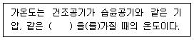
- 기온
- 습도
- 비체적
- 고도
(정답률: 54%)
33. 정적비열(Cv), 정압비열(Cp)에 관한 관계식 중 옳은 것은? (단, R은 기체 상수이다.)
- Cp=Cv/R
- Cp=Cv+R
- Cv=Cp+R
- Cv=Cp/R
(정답률: 알수없음)
34. 일반 대기 중에서 기온감률이 건조 단열기온감률보다 더 클 때의 대기안정도는?
- 절대안정
- 중립
- 조건부 불안정
- 절대 불안정
(정답률: 46%)
35. 공기가 단열 팽창하면 공기분자의 평곤 운동에너지는 어떻게 되는가?
- 증가한다.
- 감소한다.
- 변하지 않는다.
- 감소하다가 증가한다.
(정답률: 62%)
36. 내부에너지의 변화량을 바르게 나타낸 것은? (단, Cv는 정적비열, Cp는 정압비열, ΔV는 체적변화량, ΔP는 압력변화량, ΔT는 온도 변화량)
- CvΔP
- CvΔT
- CpΔV
- CpΔP
(정답률: 50%)
37. 열역학선도에 표시된 상태곡선의 양의 면적(positive area)이 음의 면적(negative area)보다 넓은 경우는?
- 대류불안정
- 잠재불안정
- 조건부불안정
- 위잠재불안정
(정답률: 37%)
38. 건조공기의 분자량을 Md, 수증기의 분자량은 Mv라 할 때 Mv/Md의 값은?
- 0.286
- 0.622
- 0.610
- 1.609
(정답률: 60%)
39. 푄(Fohn)현상에 의해 산맥의 풍하쪽에 기온을 높게 하는 열원은?
- 수증기 응결에 의한 잠열
- 공기와 지면간의 마찰열
- 얼음결정이 녹기 위한 융해열
- 지표면으로 부터의 전도열
(정답률: 59%)
40. 건조단열선이 직선으로 나타나는 단열선도는?
- Clapeyron선도
- Tephigram
- Emagram
- Skew T-log P선도
(정답률: 70%)
3과목: 대기운동학
41. 기압의 차원(dimension)은?
- [LT-2]
- [LT-1]
- [MLT-2]
- [ML-1T-2]
(정답률: 82%)
42. 다음 중 지면거칠기 길이(Roughness length)가 가장 큰 지역은?
- 눈 위
- 잔디 위
- 잔잔한 호수 위
- 높이 자란 벼 위
(정답률: 74%)
43.
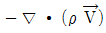
의 물리적 의미는? (단, ρ는 공기밀도,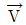
는 바람 벡터를 표시한다.)- 질량경도를 나타낸다.
- 단위체적당 질량 유입량을 나타낸다.
- 속도 발산을 의미한다.
- 속도 경도를 나타낸다.
(정답률: 67%)
44. 남극에서 10m/s의 속력으로 움직이는 단위질량의 공기덩이에 대하여 코리올리스 가속도는? (단, Ω=7.292×10-5 rad s-1)
- 1.5×10-4 m/s2
- -1.5×10-4 m/s2
- 1.5×10-3 m/s2
- -1.5×10-3 m/s2
(정답률: 43%)
45. 다음 중 로스비 수가 가장 큰 것은?
- 지균풍(Geostrophic wind)
- 경도풍(Gradient wind)
- 관성류(Inertial flow)
- 선형류(Cyclostrophic wind)
(정답률: 42%)
46. 관성력이 점성력의 몇 배인가를 나타내는 수는?
- 로스비(Rossby) 수
- 레이놀즈(Reynolds) 수
- 프로우드(Froud) 수
- 리차드슨(Richardson) 수
(정답률: 70%)
47. 다음 중 남북 방향의 대기 대순환에서 가장 뚜렷한 부분은?
- 극세포
- 페럴세포
- 해들리세포
- 적도세포
(정답률: 90%)
48. 순압대기에 관한 설명 중 맞는 것은?
- 연직 풍속 shear가 있다.
- 지균풍은 고도와 관계없이 일정하다.
- 밀도는 기압과 온도만의 함수이다.
- 등밀도면과 등압면이 일치하지 않는다.
(정답률: 46%)
49. 관성 중력파의 복원력은 다음 중 무엇인가?
- 중력
- 지구 회전력
- 중력과 지구 회전력
- 단열 팽창 및 압축
(정답률: 54%)
50. 다음 중 온난이류(warm advection)를 나타내는 것은? (단,  는 바람벡터, T는 기온을 나타낸다.)
는 바람벡터, T는 기온을 나타낸다.)
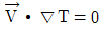
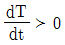
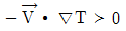
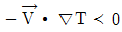
(정답률: 60%)
51. 편서풍대의 제트기류는 보통 어느 정도의 높이에 있는가?
- 5km
- 12km
- 20km
- 25km
(정답률: 85%)
52. 온위가 고도에 관계없이 거의 일정한 층은?
- 혼합층
- 에크만층
- 접지경계층
- 내부경계층
(정답률: 80%)
53. 균형류에 관계된 힘이 틀린 것은?
- 지균풍 : 기압경도력, 전향력
- 관성류 : 원심력, 전향력
- 선형풍 : 기압경도력, 원심력
- 경도풍 : 기압경도력, 원심력, 마찰력
(정답률: 77%)
54. 북반구의 상이한 두 등압면 고도를 나타낸 다음 그림 중 온도풍의 방향은?
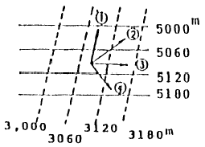
- ①
- ②
- ③
- ④
(정답률: 93%)
55. 에너지 캐스케이트(cascade)란 다음 중 어떠한 에너지 변환을 나타내는가? (단, E는 에너지를 의미한다)
- 위치 E → 평균 운동 E → 에디 운동 E
- 위치 E → 에디 운동 E → 평균 운동 E
- 평균 운동 E → 위치 E → 에디 운동 E
- 평균 운동 E → 에디 운동 E → 위치 E
(정답률: 42%)
56. 지구반경을 R이라 할 때 위도 ø에서 풍속이 동풍 u일 때의 지구 자전축을 향한 구심가속도는?
- (RΩcosø+u)2/R
- u2/Rcosø
- (RΩcosø-u)2/Rcosø
- (RΩsinø-u)2/Rcosø
(정답률: 50%)
57. 소용돌이도(vorticity)에 대한 설명 중 적합하지 않은 것은?
- 절대소용돌이도는 상대소용돌이도가 임계값(q=-f )일 때 소멸한다.
- 상대소용돌이도가 (+)이면 절대소용돌이도는 수 렴의 결과에 따라 어느 정도까지 증가할 수 있다.
- 절대소용돌이도는 (+)값으로부터 (-)값으로 감소 할 수도 있다.
- 상대소용돌이도 q는 (-)값이 될 수 있으나 f 값을 초과할 수는 없다.
(정답률: 70%)
58. 북반구 중위도 상공에서 그림처럼 기류가 흐르고 있다. A와 C에서의 상대소용돌이도는?
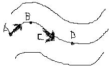
- A에서는 증가하고 C에서는 일정하다.
- A에서는 증가하고 C에서는 감소한다.
- A에서는 감소하고 C에서는 증가한다.
- A에서는 감소하고 C에서는 일정하다.
(정답률: 65%)
59. 다음 중 혼합층에서 연직방향으로 변화가 가장 심한 것은?
- 온위
- 비습
- 운동량
- 열속
(정답률: 64%)
60. 대규모적인 대기운동에서 전형적인 연직속도(typical vertical velocity)의 대략값은?
- 1~10 cm/s
- 20~30 cm/s
- 35~45 cm/s
- 50~60 cm/s
(정답률: 73%)
4과목: 기후학
61. 쾨펜의 기후 분류 중 세 번째 분류기호가 사용되지 않는 기후 집단은?
- A
- B
- C
- D
(정답률: 55%)
62. 우리나라의 국지풍에 관한 내용 중 틀린 것은?
- 샛바람 – 동풍
- 하늬바람 – 서풍
- 마파람 – 남풍
- 골바람 – 북풍
(정답률: 64%)
63. 다음 중 태양상수 값의 단위가 옳은 것은?
- 2.0 kcalm-2min
- 2.0 calcm-2sec
- 1.38 kJm-2
- 1.38 kWm-2
(정답률: 50%)
64. 클라이모그래프는 어느 요소들의 월평균 값을 이용한 그래프인가?
- 기온과 기압
- 기온과 바람
- 기온과 습도
- 기온과 일사량
(정답률: 알수없음)
65. 다음 중 전지구적인 기온의 하강에 기여하는 요인은?
- 냉매제의 사용 증가
- 화석연료의 사용 증가
- 에어로졸의 방출 증가
- 산림의 벌채
(정답률: 75%)
66. 다음 중 기후인자가 아닌 것은?
- 해발고도
- 바람
- 수륙분포
- 지형
(정답률: 55%)
67. 다음 중 24절기에 들지 않는 것은?
- 소한, 대한
- 추분, 한로
- 소서, 대서
- 중복, 말복
(정답률: 60%)
68. 1년 중에 강수량의 극대와 극소가 각각 2회씩 나타나며 극대는 춘분과 추분경에, 극소는 하지와 동지경에 나타나는 강우형은?
- 온대강우형
- 혼성식강우형
- 적도강우형
- 계절풍강우형
(정답률: 알수없음)
69. 쾨펜의 기후구를 기준으로 할 때 다음 중 그림 A역에 해당하는 기후구는?
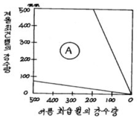
- Aw
- B
- Cf
- Dw
(정답률: 알수없음)
70. 쾨펜의 기후구분 중 BW는?
- 사막기후
- 온난습윤기후
- 한냉습윤기후
- 영구동결기후
(정답률: 84%)
71. 다음 온실효과를 일으키는 온실 기체 중 지구온난화지수가 가장 높은 것은?
- 아산화질소(N2O)
- 이산화탄소(CO2)
- 메탄(CH4)
- 수소불화탄소(HFCs)
(정답률: 75%)
72. 무상기간에 가장 관계가 깊은 기상 요소는?
- 일평균 기온
- 일최고 기온
- 일최저 기온
- 월평균 기온
(정답률: 47%)
73. 가시광선 영역의 에너지와 적외선 영역의 에너지를 비교한 내용으로 옳은 것은?
- 가시광선 영역과 적외선 영역의 총 에너지의 차이는 크지 않다.
- 가시광선 영역의 총 에너지가 적외선 영역의 에너지의 약 2배이다.
- 가시광선 영역의 총 에너지가 적외선 영역의 에너지의 약 3배이다.
- 가시광선 영역의 총 에너지가 적외선 영역의 에너지의 약 4배이다.
(정답률: 50%)
74. 강수효과비(precipitation effectiveness raito)에 대한 설명 중 맞는 것은?
- 월 강수량을 월 증발량으로 나눈 비이다.
- 연 강수량에 대한 여름 강수량의 비이다.
- 월 강수량을 월 상대습도로 나눈 비이다.
- 월 강수량을 연 강수량으로 나눈 비이다.
(정답률: 39%)
75. 권계면의 높이에 대한 설명으로 옳은 것은?
- 적도 부근에서 가장 높다.
- 중위도 부근에서 가장 높다.
- 극지방에서 가장 높다.
- 전지구적으로 일정하다.
(정답률: 47%)
76. 쾨펜 기후분류에서 온대기후와 온대기후 내의 구분에 대한 설명이 틀린 것은?
- C는 수목기후 중 최한월 평균 기온이 18~-3℃사이이다.
- Cw는 여름 최습월 강수가 겨울 최건얼 강수의 10배를 초과한다.
- Cs는 겨울 최습월 강수가 여름 최건월 강수보다 많다.
- Cf는 Cw와 Cs 어디에도 해당되지 않는 경우이다.
(정답률: 28%)
77. 대기이 온실효과(greenhouse effect)를 나타내는 주된 역할을 하는 대기중의 성분은?
- 산소
- 질소
- 일산화탄소
- 수증기
(정답률: 69%)
78. 기온 연변화 중 극대기 두 번 나타나는 지방은?
- 극지방
- 위도 45°지방
- 위도 23.5°지방
- 적도지방
(정답률: 46%)
79. 대륙성기후(continental climate)에 대한 특성 설명 중 가장 거리가 먼 것은?
- 여름에는 기온의 일교차가 작다.
- 기온의 연교차가 크다.
- 여름에는 열대와 온대를 구분하기 어렵다.
- 겨울에는 강수가 적다.
(정답률: 28%)
80. 우리 나라에서 장마전선을 형성하게 되는 기단으로 알맞게 짝지어진 것은?
- cP와 mP
- cP와 mT
- mP와 mT
- mP와 mP
(정답률: 62%)
5과목: 일기분석 및 예보론
81. 태풍이 적도 부근에서 잘 발생하지 않은 이유는?
- 기압경도가 크기 때문이다.
- 비가 많이 오기 때문이다.
- 남서계절풍이 탁월하기 때문이다.
- Coriolis force가 약하기 때문이다.
(정답률: 알수없음)
82. 다음 중 태풍의 에너지 원천은?
- 하강기류
- 수증기의 응결잠열
- 복사열
- 해수의 기화열
(정답률: 64%)
83. 중위도 지방에서 700hPa 등압면의 고도는 대략 얼마인가?
- 1000m
- 2000m
- 3000m
- 4000m
(정답률: 75%)
84. 뇌우 예보시 가장 많이 사용하는 대기 불안정지수는?
- 쇼월터안정지수(Showalter Stability Index)
- 케이지수(K-Index)
- 토탈 토탈지수(Total Total Index)
- 블랙박스지수(Black-box Index)
(정답률: 82%)
85. 대기의 어떤 층이 시간이 경과함에 따라 높아지고 있다. 이와 관련되어 나타나지 않은 사항은?
- 양의 와도가 증가하고 있다.
- 난기 이류가 있다.
- 바람이 고도에 따라 순전(veering)하고 있다.
- 층후가 증가하고 있다.
(정답률: 58%)
86. 변형장(안상부)에 대한 설명 중 틀린 것은?
- 고기압과 고기압, 저기압과 저기압이 마주보는 지역이다.
- 등압선의 모양이 대체로 점대칭을 이룬다.
- 맞보는 등압선의 시도는 같다.
- 이 지역에서 항상 전선이 발생한다.
(정답률: 72%)
87. 두 기단의 기온이 277K 및 273K이고, 풍속차가 20m/sec일 때 중위도지방 (위도 약 45°)에서 전선면의 경사는 약 얼마인가?
- 1/70
- 1/150
- 1/200
- 1/300
(정답률: 31%)
88. 지상 일기도 분석시 해안부근 관측소의 풍향이 일반풍을 대표하지 않는 경우가 많은데, 그 이유로 가장 적합한 것은?
- 해류
- 파고
- 해륙풍
- 해수온도의 변화
(정답률: 70%)
89. 중위도 서풍계에서 상층의 서풍 풍속이 일정할때 장파(Rossby wave)의 이동에 대한 다음 설명 중 적합한 것은?
- 파장이 긴 파가 더 빨리 진행한다.
- 파장이 짧은 파가 더 빨리 진행한다.
- 파장과 진행속도와는 관계가 없다.
- 여름에는 파장이 긴 파가, 겨울에는 짧은 파가 더 빨리 진행한다.
(정답률: 60%)
90. 다음 중 이동속도가 가장 빠른 전선은?
- 한랭전선
- 온난전선
- 정체전선
- 폐쇄전선
(정답률: 85%)
91. 대기선도에서 쇼월터안정지수(Showalter stability index)를 구하는데 필요가 없는 것은?
- 850hPa면의 노점온도
- 850hPa면의 기온
- 포화혼합비선
- 층후선
(정답률: 60%)
92. 일기분석에서 사용하지 않은 전선명칭은?
- 숨은전선
- 활승전선
- 활강전선
- 대륙전선
(정답률: 50%)
93. 정지대기(일반류의 속도 = 0)에서 대규모 요란의 위상속도는?
- 0
- L/2π
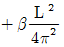
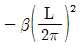
(정답률: 40%)
94. 온대 저기압의 발생과 제일 밀접한 관계가 있는 것은?
- 편서풍 파동
- 무역풍 파동
- 해들리 순환
- 극편동풍
(정답률: 80%)
95. 대기의 창(atmospheric window)에 해당되는 파장은?
- 0.4~1μm
- 1~4μm
- 5~7μm
- 8~12μm
(정답률: 73%)
96. 두 기층간의 층후(Thickness)는?
- 두 기층간의 평균속도에 비례한다.
- 두 기층간의 밀도에 비례한다.
- 두 기층간의 평균온도에 비례한다.
- 두 기층간의 수증기량에 비례한다.
(정답률: 82%)
97. 상층 기압골(trough)에 관한 설명으로 가장 거리가 먼 것은?
- 대기 상층의 편서풍대에서는 기압마루에 번갈아 나타나며 지상의 일기와 밀접한 관계를 갖는다.
- 상층 기압골의 전면에서는 공기의 상승기류를 수반한다.
- 상층 기압골의 후면에서는 공기의 하강기류가 존재한다.
- 상층 기압골의 전면에는 지상 고기압이 위치한다.
(정답률: 67%)
98. 대기선도(skew T-log P diagram)에서 구하는 대류 응결고도(convective condensation level)에 관한 설명 중 틀린 것은?
- 지표면의 가열로 에너지를 받은 후, 단열적으로 상승하여 포화에 이르는 고도이다.
- 대기선도에서 지상의 노점온도를 지나는 포화혼합비선과 환경곡선이 만나는 점의 고도에 해당한다.
- 이 고도 이상에서는 공기덩어리가 자동으로 계속 상승한다.
- 보통 기류의 강제상승으로 생성되는 적운형 구름의 운저고도에 해당한다.
(정답률: 42%)
99. 대류억제(CiN, Convective inhibition)에 관한 설명 중 틀린 것은?
- 이것이 전혀 없어야 대류운이나 용오름이 발생한다.
- 이 값이 클수록 대기는 안정하다.
- 단열선도 상에서 음성지역으로 나타난다.
- 아침에는 큰 값을 가지다가 오후에는 작아지는 경향이 있다.
(정답률: 64%)
100. 온난전선에 관한 설명 중 틀린 것은?
- 전선이 통과한 후 기온이 급하강한다.
- 지속적인 강수가 있다.
- 강수입자가 비교적 고르다.
- 강수역이 높다.
(정답률: 70%)